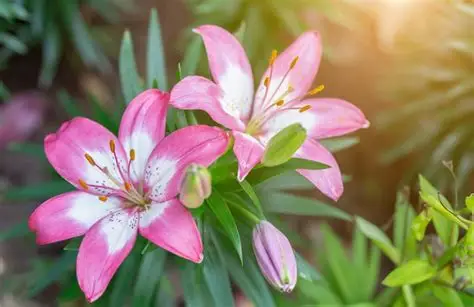
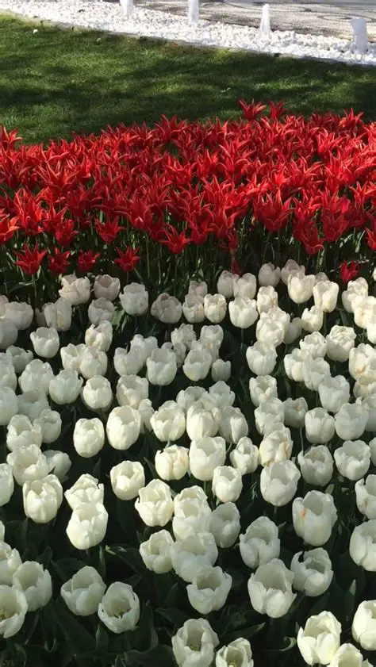
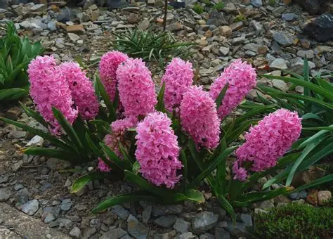
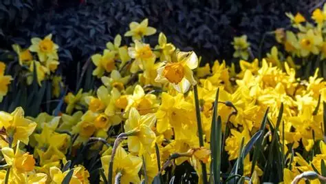
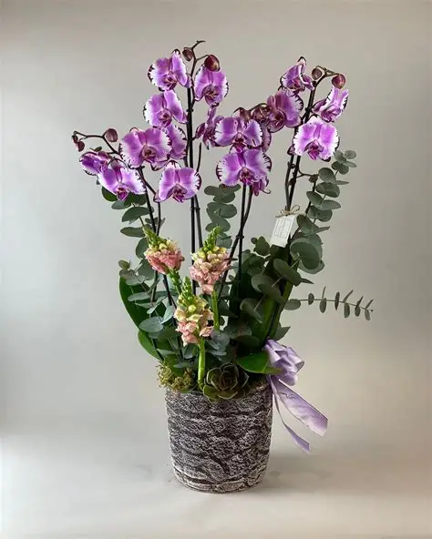
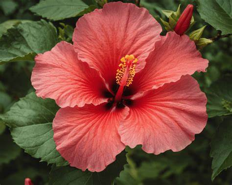
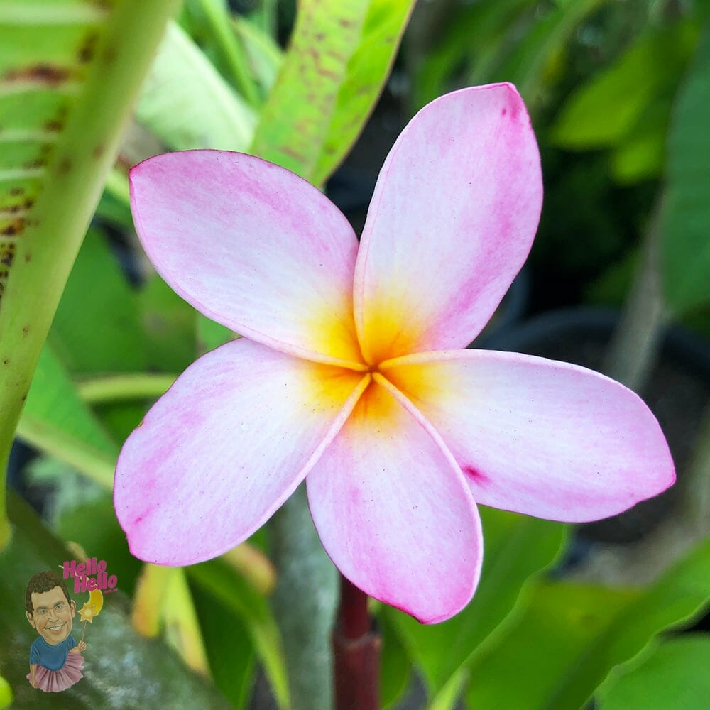
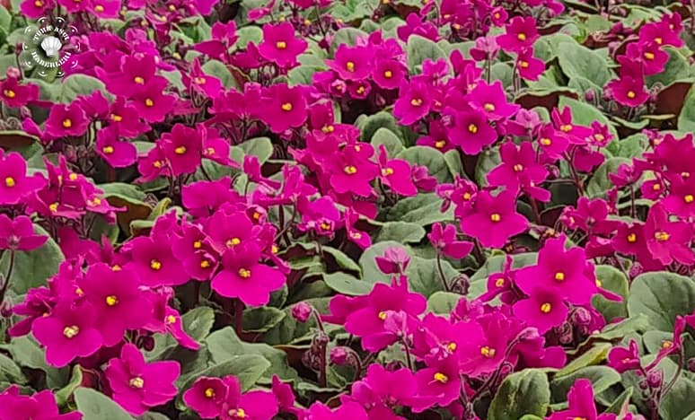
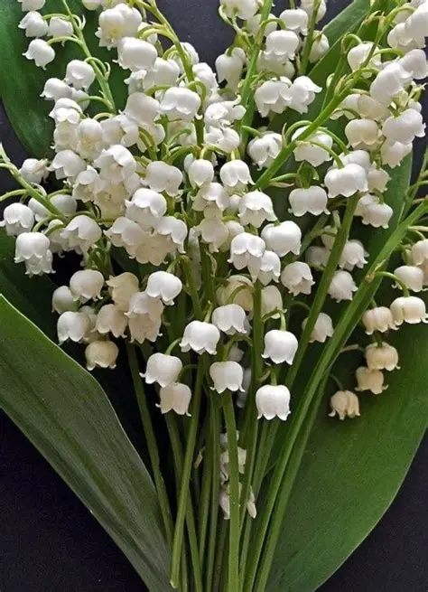
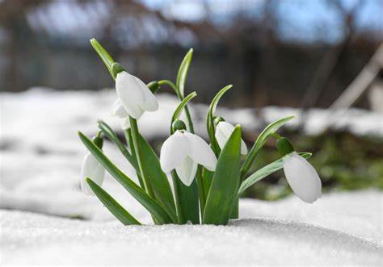

Çiçekler, doğanın en güzel ve renkli yaratıkları arasında yer alırlar.
Bahçelerimizi, evlerimizi ve doğayı süsleyen çiçekler, farklı
türleriyle de her zaman ilgi çekicidirler. Doğanın bu muhteşem
armağanları insanları mutlu eder, ruhlarını dinlendirir ve
güzellikleriyle büyüler. Çiçeklerin her biri farklı bir güzelliğe,
anlama ve duyguya sahiptir. Güller, laleler, papatyalar, menekşeler,
zambaklar, begonviller, orkideler ve daha birçok çiçek çeşidi
bulunmaktadır. Her çiçek türü, farklı renkleri, kokuları ve formları
ile kendine özgü bir şekilde hayat bulur. Her biri, doğanın bize
sunduğu eşsiz bir hediye gibi karşımıza çıkar. Bahçe düzenlemelerinde,
çiçek aranjmanlarında, düğün ve davet süslemelerinde, çeşitli
etkinliklerde ve birçok farklı alanda kullanılan çiçekler, yaşamımızın
vazgeçilmez bir parçası haline gelmiştir. Çiçekler aynı zamanda
sevginin, mutluluğun ve güzelliklerin sembolü olarak da kabul edilir.
Adeta doğanın renkli birer elçisi olan çiçekler, insanlara huzur ve
pozitif enerji verirler. Bu özel yaratıklar, her mevsimde farklı
renkleri ve türleriyle hayatımıza renk katarlar. İlkbaharda açan
rengarenk papatyalar, yazın güneşle yarışan sardunyalar, sonbaharda
yaprak döken güller ve kışın bile renkli görünen menekşeler… İster
bahçe kenarında, ister saksıda, ister kesilmiş bir vazoda olsun,
çiçekler her zaman insanları kendilerine hayran bırakır ve ruhlarını
şenlendirir. Her bir çiçeğin kendine özgü bir ismi, anlamı ve
güzelliği vardır. Bu yüzden çiçeklerle ilgili farklı türleri ve
isimleri öğrenmek, doğanın bu büyülü dünyasını daha iyi keşfetmemize
yardımcı olur. Çiçeklerin güzelliklerine ve renklerine hayran kalarak,
doğanın bize sunduğu bu eşsiz armağanı her zaman takdir etmeli ve
korumalıyız.
BAHAR ÇİÇEKLERİ
Bahar çiçekleri, kış mevsiminin soğuk ve durağan döneminden sonra
doğanın yeniden canlanmasını simgeleyen bitkilerdir. Genellikle
mart-nisan aylarında açmaya başlarlar ve havaların ısınmasıyla
birlikte renkleri, kokuları ve hassas yapılarıyla dikkat çekerler. Bu
çiçekler; toprağın nemli, güneş ışığının yumuşak ve sıcaklığın ılıman
olduğu dönemlerde en iyi şekilde gelişirler. Bahar çiçekleri
çoğunlukla soğanlı bitkiler veya çok yıllık bitkiler grubunda yer
alır. Lale, nergis, sümbül gibi türler kış boyunca toprak altında
soğuklama sürecinden geçer ve ilkbaharda hızla filizlenir. Bu çiçekler
genellikle hoş kokulu, canlı renkli ve estetik görünümleriyle hem
bahçelerde hem de iç mekânlarda dekoratif amaçla kullanılır. Ayrıca
bahar çiçekleri, polen taşıyan böcekler için de ilk besin
kaynaklarından biridir; bu yüzden ekosistemin dengesinde önemli bir
role sahiptirler.
|

LALE
|
|

SÜMBÜL
|
|

NERGİS
|
|
TROPİKAL ÇİÇEKLER
Tropikal çiçekler, yıl boyunca sıcak ve nemli iklimlerde yetişen,
canlı renkleri ve gösterişli görünümleriyle dikkat çeken bitkilerdir.
Genellikle geniş yapraklı orman bölgelerinde bulunurlar ve bol güneş
ışığı ile yüksek nem isterler. Tropikal çiçekler, egzotik görünüşleriyle
hem bahçelerde hem de iç mekân süslemelerinde tercih edilir. Orkide,
hibiskus ve frangipani gibi çiçekler bu grubun en fazla bilinen
örneklerindendir. Bu çiçeklerin büyük bölümü hoş kokulu olup,
kelebek ve kuşlar için önemli besin kaynaklarıdır. Tropikal
çiçekler, renkli ve enerjik tasarımlar oluşturmak isteyenler için
ideal bir bitki grubudur.
|

ORKİDE
|
|

HİBİSKUS
|
|

FRANGİPANİ
|
|
ORMAN ÇİÇEKLERİ
Orman çiçekleri, gölgelik ve nemli bölgelerde doğal olarak yetişen,
dayanıklı ve zarif bitkilerdir. Genellikle büyük ağaçların altında,
güneş ışığının süzüldüğü alanlarda görülürler. Bu çiçekler aşırı
güneş istemez ve çoğu yıl boyunca yeşil kalır. Orman menekşesi,
inci çiçeği ve kardelen gibi türler orman çiçeklerinin en bilinen
örnekleridir. Sessiz ve sakin habitatlarda yetiştiklerinden,
doğaya huzurlu bir görünüm katarlar. Hoş kokuları ve sade güzellikleri
sayesinde hem doğal peyzajlarda hem de dekoratif düzenlemelerde sık
tercih edilirler.
|

ORMAN MENEKŞESİ
|
|

İNCİ ÇİÇEĞİ
|
|

KARDELEN
|
|